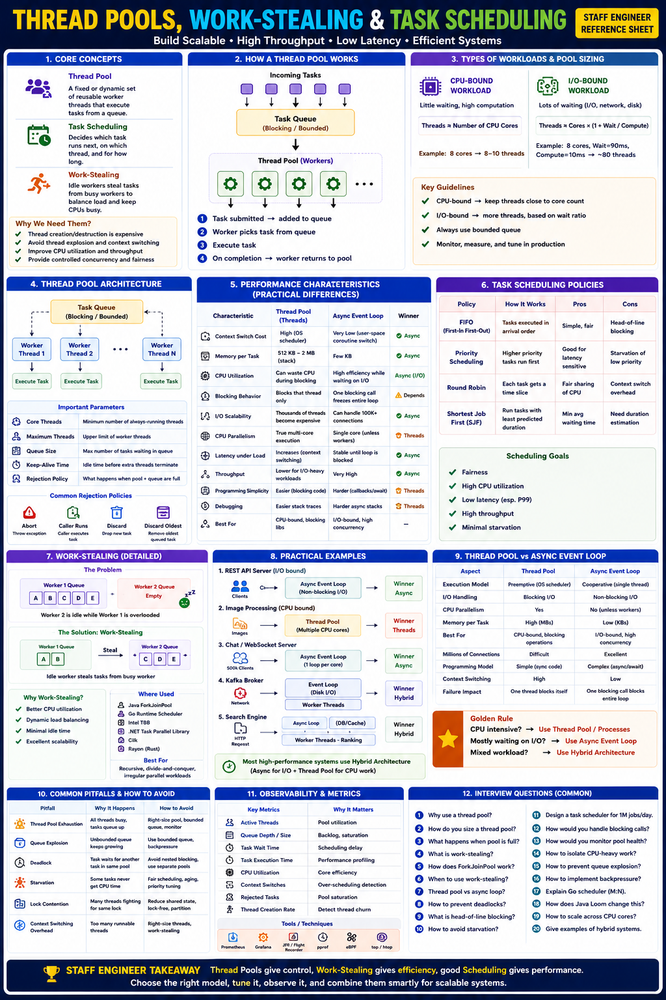

Staff Engineer Reference — Concurrency & Performance
Modern systems rarely create one thread per request — thread creation and destruction are expensive. Instead, production systems rely on:
These mechanisms directly impact throughput, P99 latency, CPU utilization, memory consumption, scalability, and fairness.
A fixed or dynamically managed set of reusable worker threads. Instead of create → run → destroy per task, tasks are submitted to a queue and picked up by idle workers.
❌ Without Pool
✅ With Pool
| Parameter | Purpose |
|---|---|
| Core Threads | Minimum always-running workers |
| Maximum Threads | Upper concurrency limit |
| Queue Size | Number of waiting tasks (always bound this!) |
| Keep-Alive Time | Time before idle threads terminate (30–60 s) |
| Rejection Policy | What happens when pool is full |
| Rejection Policy | Behavior |
|---|---|
| Abort | Reject new task with exception |
| Caller Runs | Calling thread executes task (natural backpressure) |
| Discard | Drop task silently |
| Discard Oldest | Remove oldest queued task |
Pool Sizing Formula
Scheduling determines which task runs next, on which thread, and for how long.
| Strategy | How It Works | Trade-off |
|---|---|---|
| FIFO | First submitted, first executed | Simple but HOL blocking risk |
| Priority | Higher priority runs first | Good for latency-sensitive tasks; may starve low-priority work |
| Round Robin | Each task gets a time slice | Fair; used by OS schedulers |
| Shortest Job First | Prefer tasks expected to finish quickly | Minimizes avg wait; requires duration estimates |
Practical scheduling goals: Fairness · High CPU utilization · Low latency · High throughput · Minimal starvation
Problem: Thread 1 has 100 tasks, Thread 2 is idle. Thread 2 sits wasted. Solution: Thread 2 steals half of Thread 1's queue.
| Feature | Central Queue | Work-Stealing (per-worker deque) |
|---|---|---|
| Queue Contention | High (all workers compete) | Low (each owns its queue) |
| Load Balancing | Static | Dynamic |
| Scalability | Moderate | Excellent |
| Complexity | Low | Higher |
Where Work-Stealing is Used:
Java ForkJoinPool — Canonical Work-Stealing Implementation
Fix: Use bounded queues, separate pools for blocking vs non-blocking work, or async I/O.
Worker submits a child task and blocks waiting for it, but all pool threads are blocked → child task can never start.
Fix: Avoid blocking waits inside pool tasks; use ForkJoinPool.managedBlock(); use separate pools for dependent tasks.
Unbounded queue grows → high memory usage, long tail latency, OOM.
Fix: Always use bounded queues with an appropriate rejection policy.
Too many threads competing for shared locks → CPU drops. Low-priority tasks never execute.
Fix: Reduce shared state, lock-free data structures, partitioned work, aging in priority queues.
| Feature | Thread Pool | Async Event Loop |
|---|---|---|
| Blocking I/O | Supported | Avoided (must use non-blocking) |
| CPU Parallelism | ✅ Yes (multi-core) | ❌ No (alone) |
| Memory | Higher (stacks) | Lower (coroutine frames) |
| Millions of Connections | Difficult | Excellent |
| Best For | CPU-bound work, blocking calls | I/O-bound, high concurrency |
Hybrid Architecture (Industry Standard)
Key Metrics to Monitor
| Metric | Indicates |
|---|---|
| Active Threads | Pool utilization |
| Queue Depth | Backlog / saturation |
| Task Wait Time | Scheduling delay |
| Rejected Tasks | Pool exhaustion |
| Context Switches | Scheduler overhead |
| CPU Utilization | Core efficiency |
System Design Applications
| System | Strategy |
|---|---|
| Java ExecutorService | Thread Pool |
| ForkJoinPool | Work-Stealing |
| Go Runtime | M:N + Work-Stealing |
| Kafka | Network threads + I/O threads |
| Netty | Event Loop + Worker Pool |
| Redis | Single-threaded event loop |
| Workload | Recommendation |
|---|---|
| CPU-bound computation | Fixed Thread Pool (≈ CPU cores) |
| Recursive parallel algorithms | ForkJoinPool (work-stealing) |
| REST APIs / HTTP | Async Event Loop + Thread Pool for blocking |
| High-connection chat server | Async Event Loop |
| Image / video processing | ForkJoinPool or Thread Pool |
| Kafka / Netty / Search | Hybrid (event loop + worker pool) |
Fundamentals
Work-Stealing
Staff-Level Design
| Level | Thinking Pattern |
|---|---|
| Junior | "I'll create a new thread for each request so they don't block each other." |
| Senior | "I'll use a thread pool with 2× CPU cores for CPU-bound work, and a larger pool for I/O-bound tasks. I'll set bounded queues with Caller-Runs rejection." |
| Staff | "I segment workloads: I/O-bound requests go to an async event loop (one per core); CPU-bound tasks offload to a ForkJoinPool or bounded ExecutorService sized by Little's Law. Blocking calls (legacy DB drivers, file I/O) go to a dedicated blocking thread pool, isolated from the non-blocking pool to prevent contamination. I instrument queue depth, task wait time, and rejected task rate as pool health signals, and set alerts before P99 degrades. For recursive parallelism I use ForkJoinPool. I validate sizing under load (not just unit tests) and tune based on profiled wait/compute ratios." |
This is a core concurrency concept that staff engineers must master for designing high-performance systems.
— including how they work internally, trade-offs, and when you apply each in system design interviews.
| Aspect | Explanation | Staff-level Insight |
|---|---|---|
| Definition | A thread pool is a group of pre-created threads that execute tasks from a shared queue instead of creating/destroying threads per request. | Avoids thread creation cost, stabilizes resource usage, improves throughput under load. |
| Why needed | Thread creation is expensive (stack allocation, kernel resources, context switch). Pools reuse threads → faster, predictable. | Ideal when you handle many short-lived or frequent tasks (like HTTP requests, DB operations). |
| Core Components | Task Queue (FIFO or priority) · Worker Threads (poll for tasks) · Dispatcher (submits new work) · Rejection Policy (when full). | Common in Java (ThreadPoolExecutor), C++, Go runtime, Python ThreadPoolExecutor. |
| Execution Flow | 1️⃣ Client submits task → added to queue. 2️⃣ Idle worker thread dequeues task. 3️⃣ Executes task → repeats. 4️⃣ If no threads idle, task waits (or rejected). | Threads often block on queue pops; helps control concurrency. |
| Key Parameters | Core pool size · Max pool size · Queue capacity · Keep-alive time · Rejection policy | Tuning these determines throughput vs latency trade-off. |
| Advantages | Reuse threads (low overhead) · Bounded concurrency (prevents resource exhaustion) · Task queuing smooths bursts. | Thread pools are a backpressure mechanism. |
| Drawbacks | Tasks may block, causing thread starvation. Need careful sizing to balance throughput vs latency. Shared queues → contention. | Over-saturated pools lead to queue delays → cascading latency. |
| Used in System Design | Web servers, database connection handlers, microservice RPC handlers, worker daemons. | In interviews, mention pools to "bound concurrency and manage resource utilization gracefully." |
| Aspect | Explanation | Staff-level Insight |
|---|---|---|
| Definition | A load balancing technique where each worker thread has its own local queue, and idle threads steal tasks from others' queues. | Minimizes lock contention and improves CPU utilization. |
| Why Needed | Central queue causes contention under high concurrency. Some threads may idle while others overloaded. | Solves "hot queue" bottleneck problem in multi-core task execution. |
| How It Works | Each thread maintains a double-ended queue (deque). When a thread spawns subtasks, it pushes them on its deque. When idle, it steals tasks from the tail of another's deque. Local deque access (head) is lock-free; stealing uses minimal locking. | Efficient for fine-grained parallelism — used in fork-join frameworks, async runtimes, parallel stream processing. |
| Example Frameworks | Java ForkJoinPool · Cilk / TBB (Intel Threading Building Blocks) · Go runtime scheduler (M:N model) · Rust Tokio scheduler (work-stealing for async tasks). | Go's scheduler uses work-stealing to balance goroutines across P (processors). |
| Performance Benefits | Low lock contention (local queues) · Better cache locality · Dynamic load balancing across threads | Keeps all cores busy even when workload is uneven. |
| Drawbacks | More complex runtime implementation · Occasional imbalance under bursty load · Overhead for stealing logic | Worth complexity for high concurrency / recursive parallelism. |
| Use Case Scenarios | Recursive parallel tasks (e.g., quicksort, matrix multiplication) · Task DAGs (e.g., dataflow pipelines) · Async runtimes (event loops + worker threads). | Mention this if you design systems with parallel execution frameworks (search index building, rendering pipelines, ML preprocessing). |
| Aspect | Explanation | Staff-level Insight |
|---|---|---|
| Definition | Deciding which task runs next and on which thread/core, given limited resources. | Core of thread pool or OS scheduler design. |
| Goal | Maximize throughput, minimize latency, avoid starvation, maintain fairness. | At staff level, you discuss tuning scheduling policy for system SLAs. |
| Common Strategies | FIFO / Round-Robin – simple queue order · Priority-based – latency-sensitive tasks first · Work-stealing – load balancing · Deadline-based – schedule before time limit · Fair scheduling – equal CPU share | Combination often used in production schedulers. |
| OS-level Scheduling | Kernel decides which thread runs next (preemptive). E.g., Linux CFS (Completely Fair Scheduler). | Thread pools typically rely on user-space scheduling policies over OS threads. |
| Runtime-level Scheduling | Runtimes (JVM, Go, Python async) do user-level scheduling — mapping user tasks/goroutines to kernel threads. | Important to mention "M:N scheduling" models. |
| Scheduling Metrics | Latency (response time) · Throughput (tasks/sec) · Fairness (no starvation) · Utilization (CPU busy %) | Trade-offs depend on SLA: interactive (latency) vs batch (throughput). |
| Advanced Schedulers | Fair Queuing (weighted round robin) · Deadline Scheduling (EDF) · Task Affinity (keep on same core for cache locality) | Java's Loom + ForkJoinPool uses task affinity + work-stealing. |
| Trade-offs | Fine-grained scheduling adds overhead. Too coarse → poor load balancing. | Staff-level tuning balances scheduling granularity vs context-switch cost. |
Designing a web server (e.g., in Java, Go, or Rust):
| Component | How It Uses These Concepts | Reasoning |
|---|---|---|
| Connection Handler | Uses thread pool (fixed or elastic) to handle requests. | Reuses threads, bounds concurrency. |
| CPU-heavy Work | Uses work-stealing pool (ForkJoinPool) to parallelize sub-tasks. | Balances computation load across cores. |
| Async I/O Handling | Uses event loop + task scheduler to queue read/write events. | Cooperative scheduling for non-blocking I/O. |
| Scheduler Policy | Often FIFO for tasks, with priority queues for latency-sensitive ops. | Keeps tail latency predictable. |
| End Result | Efficient, low-latency, high-throughput service with stable resource usage. | Combines strengths of all three mechanisms. |
| System / Language | Model Used | Scheduler Type | Details / Staff Takeaway |
|---|---|---|---|
| Java ThreadPoolExecutor | Fixed/cached thread pool | FIFO queue | Configurable size, rejection, priority. |
| Java ForkJoinPool | Work-stealing pool | Local deques per thread | Used by parallelStream(), CompletableFuture. |
| Go Runtime (Goroutines) | M:N lightweight threads | Work-stealing + global run queue | Auto-balances goroutines across cores (G–M–P model). |
| Rust Tokio Runtime | Async event loop + work-stealing | Priority-aware scheduler | Combines async I/O and multithreading. |
| C++ TBB | Work-stealing | DAG-based task scheduling | Used in HPC and ML workloads. |
| Python concurrent.futures | Thread/ProcessPoolExecutor | FIFO queue | Simpler API; GIL limits parallelism in threads. |
| Scenario | Best Fit | Why |
|---|---|---|
| Handling many small independent tasks (e.g., HTTP requests) | Thread Pool | Reuse threads, limit concurrency, reduce overhead. |
| Recursive or dynamic parallelism (divide-and-conquer tasks) | Work-Stealing | Efficient load balancing and cache locality. |
| Real-time systems or latency-sensitive scheduling | Priority/Deadline Task Scheduling | Predictable latency, controlled preemption. |
| Asynchronous event-driven servers | Event Loop + Task Scheduler | Cooperative scheduling and event multiplexing. |
| Multi-tenant workloads | Fair or Weighted Scheduling | Ensures isolation and fairness. |
| Question | Strong Staff-Level Answer |
|---|---|
| "Why use a thread pool?" | "To amortize thread creation overhead, cap concurrency, and provide backpressure — critical for system stability under burst traffic." |
| "What's work-stealing?" | "A load-balancing mechanism where idle workers steal tasks from others' queues — minimizes contention and maximizes CPU utilization." |
| "How does task scheduling impact latency?" | "Scheduling policy determines fairness and response times; priority-based scheduling can favor latency-critical requests over batch jobs." |
| "How would you tune thread pool size?" | "Empirically balance #CPU cores × (1 + wait_time / service_time) for throughput, or separate pools for blocking vs compute tasks." |
| "What happens if all threads are busy with blocking tasks?" | "Thread starvation — I'd isolate blocking tasks in a dedicated pool or use async I/O to avoid thread blocking." |
Let's dig deep at the OS level — how thread pools, work-stealing, and task scheduling are implemented and behave from the kernel → runtime → user-facing API layers.
ThreadPoolExecutor, ForkJoinPool, Goroutine scheduler, Tokio).futex system call for parking/unparking, clone/pthread_create for thread creation, CPU scheduler (runqueue per CPU, load balancing, priorities).Concrete flow for a typical thread-pool (1:1 worker threads mapped to kernel threads):
1. Creation
pthread_create() / clone() → kernel creates a thread control block (TCB), sets up a stack (via mmap or heap), registers, scheduling metadata, thread-local storage (TLS).2. Task submission
Task object into the pool's task queue. Implementation choices: global queue with mutex/condvar (simple), or multiple queues (per-worker) to reduce contention.3. Worker loop
Park/unpark uses futex or pthread_cond_wait. When queue empty, worker parks (enters kernel sleep) until signaled.
4. Blocking & wake-up
futex wake or pthread_cond_signal to wake a parked thread.5. Thread lifecycle and sizing
core_size, max_size, keep_alive: when work surges and queue longer than threshold, pool may spawn extra threads via pthread_create().munmap/free).OS-level costs to highlight
pthread_create() is expensive (alloc stack, set TCB, syscall). Pools amortize that cost.futex. Fast uncontended path stays in user-space; contested path goes to kernel.CMPXCHG, mfence) to coordinate producers/consumers and avoid kernel involvement. But on contention CAS loops still create CPU cache-line traffic.Key OS-level effects:
Work-stealing is generally implemented in user-space by runtimes (ForkJoinPool, Cilk, Go scheduler). The kernel only sees resulting kernel threads being scheduled; the stealing logic is done with atomics and minimal kernel interaction.
Chase–Lev deque (classic lock-free algorithm) — typical pattern:
Algorithmic steps (simplified):
OS-level implications
Performance considerations
Edge cases & correctness
Two scheduling layers:
A. Kernel CPU Scheduler (e.g., Linux CFS)
SCHED_FIFO, SCHED_RR) vs normal fairness (CFS).B. User-level Runtime Scheduler
How they interact
futex syscall to sleep the thread in kernel. Kernel keeps wait queues keyed by memory address.futex_wait(addr, expected_val) puts thread to sleep if addr == expected_val.futex_wake(addr, n) wakes up n waiters.pool_size ≈ #cores × (1 + wait_time / service_time) (Little's Law style) — for CPU-bound wait_time≈0 so pool ≈ cores; for blocking-heavy, scale up.futex_wake.